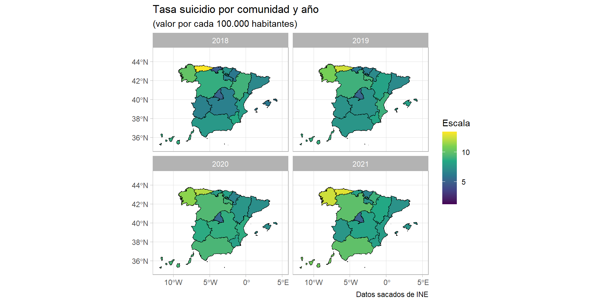
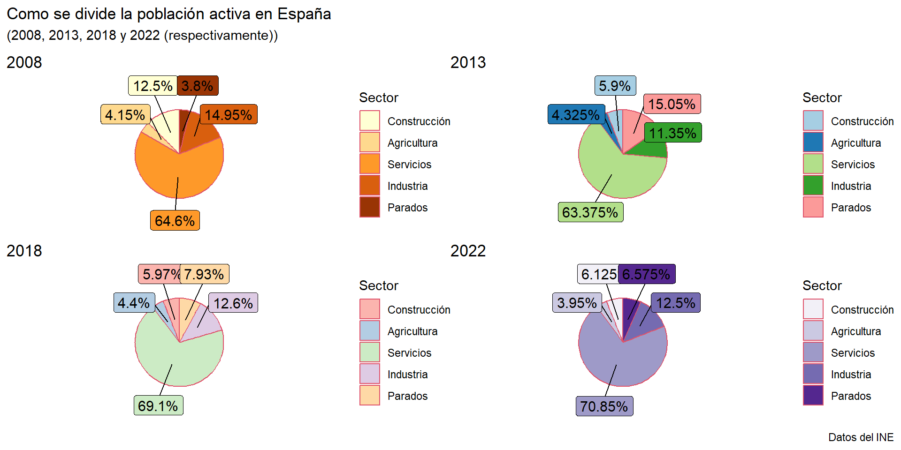

Análisis general de las regiones de España
19/12/22
Índice
Introducción
Datos
Población
Economía
1. Introducción
En la asignatura “Programación y manejo de datos en la era del Big Data”, debíamos crear dos trabajos distintos: Uno por equipos y uno grupal para así mostrar lo aprendido durante todo el año.
Como el tema era completamente libre, nosotros elegimos un tema muy general como es el análisis de las regiones de España y asi poder sacar datos de cualquier idea que se nos pasase en ese momento por la cabeza.
El trabajo lo hemos dividido en 2 partes:
La primera consta sobre la demografía Española, viendo las diferencias de población entre los hombres y mujeres, los diferentes rangos de edad y las provincias mas pobladas.
La segunda parte ya es relacionada con la economía española, ya que hablaremos sobre el PiB nominal, la diferencia salarial entre hombres y mujeres, como se distribuye el trabajo y la pobreza en España.
2. Datos
Para los datos, empezamos cogiéndolos del Kaggle pero la forma con la que se descargaban y/o se abrían no era la correcta para nuestro nivel de R. Es por eso, que decidimos pasar a datos del INE y aunque al inicio nos costaba un poco abrir los datos de la forma correcta, vimos una forma de descargar los datos llamada PC.Axis. Esta a través del paquete pxR, nos abría los datos directamente en el R studio con el formato adecuado y bien estructuradas las columnas. También estaba la forma de descargarlos por CSV o por Excel, y aunque esta forma está dada en clase, la forma en la que se detectaban las variables nos hacía imposible el poder usar algunas columnas de forma numérica, asi que recomendamos el uso de PC.Axis.
Los datos se pueden cargar en la memoria de de R/RStudio de esta forma:
3. Población

3.1. Población por CCAA
Aquí observamos un gráfico animado de lineas sobre la evolución de la población de España por comunidades autónomas desde 1996 hasta 2020.
3.2. Mujeres vs Hombres
En este gráfico representamos la población española por grupos de edad y sexo por miles de habitantes.
3.3. Provincias mas pobladas 2020
Este gráfico circular nos muestra las 10 provincias más pobladas de España en 2020.
3.4. Nacimientos vs Defunciones
Vamos a comparar la población que nace y la población que muere cada año y luego ver si el saldo es positivo o negativo.
3.5. Saldo Vegetativo
3.6. Mapa de suicidios
En estos mapas conjuntos representamos la tasa de suicidio por cada 100.000 habitantes clasificados por varios años y comunidades.
4. Economía

4.1. PIB nominal España
Aquí vemos una visión general del PIB Nominal por comunidades.
4.2. Población activa por sectores
En este caso vamos a ver cómo se divide la población en activo Española a través de 4 sectores distintos más el porcentaje de parados por año. Lo veremos a través de 4 años distintos con un gráfico circular.
4.3. Salario medio CCAA
El siguiente gráfico de barras animado nos muestra la distribución salarial en España por comunidades autónomas desde 2006 hasta 2022.
4.4. Salario CCAA 2022
Aquí os dejo un gráfico de barras medio bonito de la distribución salarial en España por CCAA, pero solo de 2022. Al ser el otro en movimiento, dejo este estático con los resultados de 2022 que entiendo que son los más interesantes y actuales.
4.5. HOMBRES vs MUJERES
Este es un gráfico de lineas interactivo comparando la media salarial en España entre hombres y mujeres.
4.6. Tasa de pobreza
Aquí lo que hemos hecho es un gráfico donde aparece la evolución de la tasa de pobreza de ciertas comunidades, hemos elegido las comunidades con mayor tasa y las que menos (aunque realmente no ha sido tan así, hemos cogido las que nos venían bien para que quedase chulo en el gráfico).
4.7. Grafico de Lineas Pobreza
En esta tabla se representa la tasa de pobreza de todas las comunidades en el año 2022 para así tener una idea a primera vista de cómo se distribuye.
| Tasa de pobreza 2022 | ||
| renta del año anterior a la entrevista | ||
| Periodo | ine_ccaa.n | value |
|---|---|---|
| 2022 |
Extremadura
|
30.0 |
| 2022 |
Canarias
|
29.4 |
| 2022 |
Andalucía
|
29.1 |
| 2022 |
Murcia, Región de
|
26.3 |
| 2022 |
Castilla - La Mancha
|
26.1 |
| 2022 |
Comunitat Valenciana
|
22.3 |
| 2022 |
Asturias, Principado de
|
20.1 |
| 2022 |
Galicia
|
18.0 |
| 2022 |
Castilla y León
|
17.8 |
| 2022 |
Balears, Illes
|
16.9 |
| 2022 |
Rioja, La
|
16.6 |
| 2022 |
Aragón
|
15.0 |
| 2022 |
Cantabria
|
14.8 |
| 2022 |
Madrid, Comunidad de
|
14.8 |
| 2022 |
Cataluña
|
14.5 |
| 2022 |
País Vasco
|
12.2 |
| 2022 |
Navarra, Comunidad Foral de
|
10.9 |
4.8. Precio de la vivienda
Este gráfico representa el precio de las viviendas por comunidades a lo largo del tiempo con base en el año 2015, como podemos ver en estas comunidades, los precios de la vivienda se están acercando mucho a los de la burbuja de 2008, sobre todo en las comunidades más urbanas.
3.9. Turismo vinculado a España
Para terminar el trabajo, vamos a ver una tabla sobre el turismo que se mueve en España. En ella tenemos 3 filas y 20 columnas donde se explicara como es el movimiento y si estos se quedan a pernoctar o no.
| Estructura del turismo de España | |||||||||||||||||||
| Tenemos en cuenta todos los movimientos vinculados a España | |||||||||||||||||||
| Tipo de visitante | Tipo de viaje | 2021 | 2020 | 2019 | 2018 | 2017 | 2016 | ||||||||||||
|---|---|---|---|---|---|---|---|---|---|---|---|---|---|---|---|---|---|---|---|
| Turismo Receptor1 | Turismo Interno1 | Turismo Emisor1 | Turismo Receptor2 | Turismo Interno2 | Turismo Emisor2 | Turismo Receptor3 | Turismo Interno3 | Turismo Emisor3 | Turismo Receptor4 | Turismo Interno4 | Turismo Emisor4 | Turismo Receptor5 | Turismo Interno5 | Turismo Emisor5 | Turismo Receptor6 | Turismo Interno6 | Turismo Emisor6 | ||
| Turistas | Número de viajes | 31.180.802 | 135.687.709 | 7.205.752 | 18.933.103 | 96.449.394 | 5.074.468 | 83.509.153 | 173.754.971 | 20.119.745 | 82.808.413 | 176.772.352 | 19.307.118 | 81.868.522 | 176.399.801 | 17.289.487 | 75.315.008 | 166.218.791 | 15.732.052 |
| Excursionistas | Número de viajes | 20.450.574 | 212.971.415 | 1.525.163 | 17.476.868 | 160.339.793 | 1.295.822 | 42.660.933 | 257.619.303 | 2.971.256 | 41.647.253 | 278.190.668 | 3.255.321 | 39.848.764 | 280.332.355 | 3.242.631 | 40.246.069 | 238.195.864 | 2.872.100 |
| Turistas | Número de pernoctaciones | 253.985.281 | 557.278.462 | 68.893.926 | 147.986.129 | 450.689.308 | 42.719.916 | 594.017.856 | 649.516.399 | 144.391.738 | 616.714.999 | 644.365.970 | 151.773.267 | 633.696.886 | 660.794.364 | 141.154.479 | 593.417.445 | 643.050.482 | 137.274.029 |
| Fuente: datos de INE | |||||||||||||||||||
| Obtenidos a partir del paquete pxR | |||||||||||||||||||
Slides hechas con Quarto